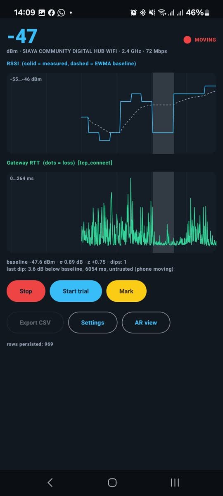
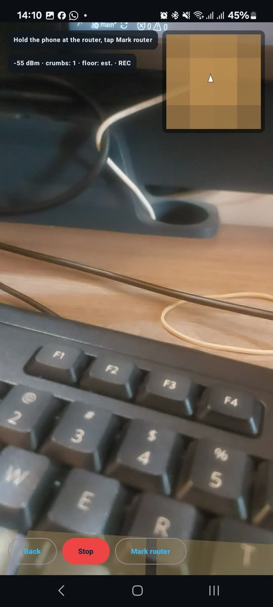
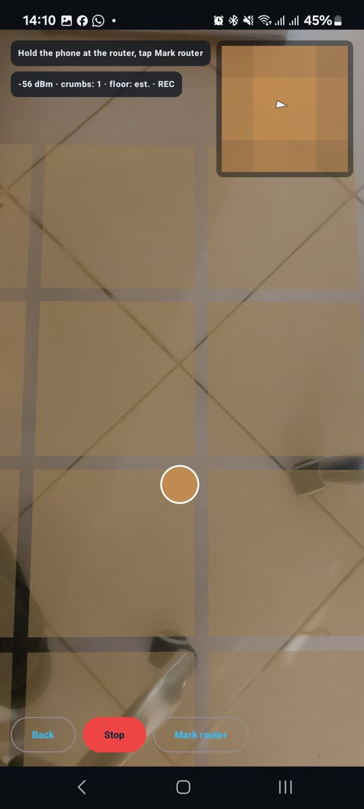
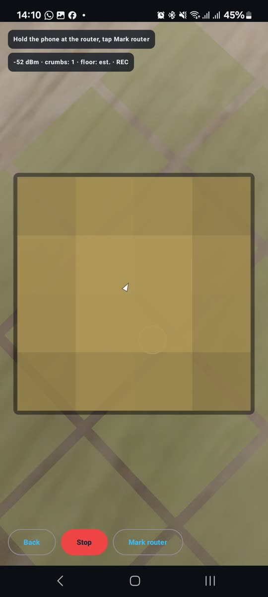
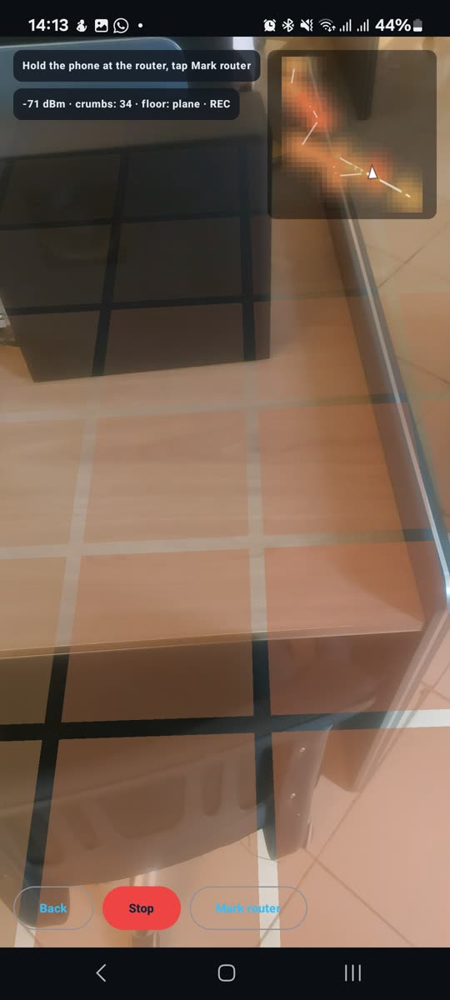
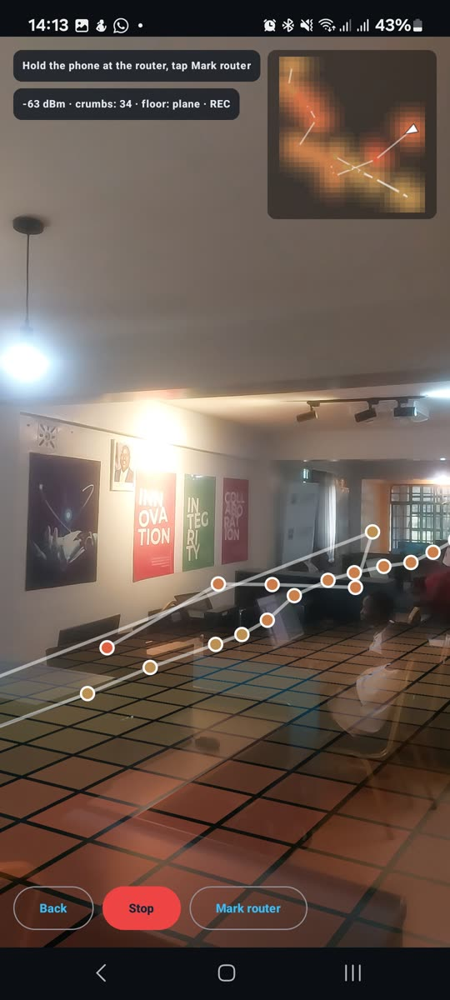
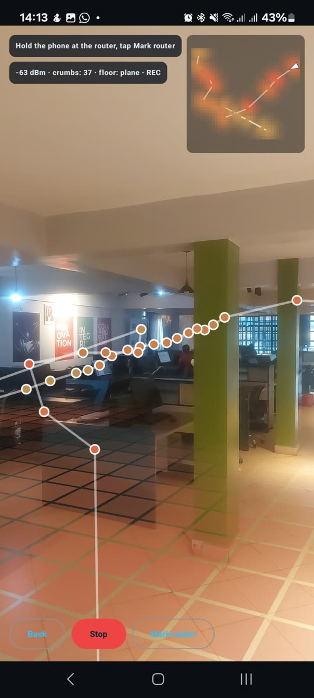
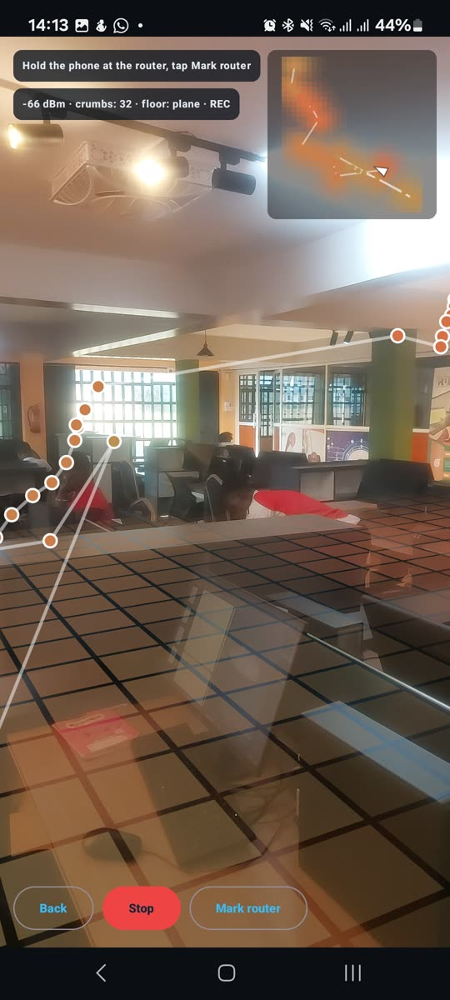

An Android instrument that measures whether a person walking through a WiFi link is something the radio can actually see.
The eventual idea is a phone held up in a room, showing where the WiFi actually goes. That product is easy to imagine and easy to fake. Point a camera at a wall, draw some particles, and nobody can tell whether the visualisation has any relationship to the radio at all. Almost every WiFi visualiser in existence is doing exactly that.
So I did not build it. I built the instrument that decides whether it is worth building, and it answers one narrow question. When a person walks between the phone and the router, how large is the drop in signal strength, how long does it take to appear, and does the round trip time to the gateway react before the signal strength does. If the answer is that the dip is too small or too slow, there is no product, and better to find that out now than after building an AR engine on top of it.
A visualisation that cannot be traced back to a measurement is an animation.
Everything in the app belongs to one of three categories, and the boundaries between them are enforced rather than documented. Measured is what a sensor actually returned. Inferred is what was calculated from measurements, with the calculation visible. Rendered is anything drawn for a human to look at.
The rule that matters is the direction of travel. Values flow from measured to inferred to rendered and never backwards. Nothing the interface computes for display is allowed to feed back into detection, because the moment a smoothed, prettied number re-enters the pipeline you can no longer say what the radio reported and what the chart invented. Timestamps are attached at the source rather than downstream for the same reason. A sample stamped when it was drawn is a sample that quietly encodes the queue it sat in.
Three streams run at once, on one clock, so that any two points at the same position on the screen are the same instant.
Moving the phone changes the signal by as much as a person crossing the link does. The two effects are the same size, which means that without a motion channel the entire measurement is worthless and would confidently report detections that were the operator's own hand. This is the failure mode the honest version of this app has to solve first.
So the detector marks a dip as trusted only after the phone has been still for a second and a half. Untrusted dips are still recorded, flagged rather than discarded, because the number of false positives that motion produces is itself a result worth having. Throwing them away would hide the very thing the trial is trying to quantify.
When a ping does not come back, most code treats it as an error, logs it and moves on. Here a timeout or a gap in sequence numbers emits an explicit loss sample into the stream. A packet that never arrived is one of the more informative things that can happen while somebody walks through a radio link, and discarding it as an exception throws away signal in the name of tidiness.
The detector itself is a plain state machine with no framework imports and no knowledge of Android, which keeps it testable without a device and reusable unchanged when the later phases arrive. Every threshold in the system lives in one configuration object, adjustable while the app runs, so nothing is buried as a magic number three files deep.
A session streams to a local database in batches of about a second, so a crash or a dropped connection in the middle of a trial costs the last second rather than the afternoon. Export produces a single file in long format, one row per sample, with a column saying which stream it came from and a shared monotonic clock in every row. It loads into pandas or R in one call with no reshaping.
A companion script reads that file and reports the lag between the moment a person was marked crossing the line and the moment the detector opened a dip, whether the round trip time moved first, and how many flagged motion dips landed inside the trial window. The protocol includes a deliberate smoke test: wave a hand over the antenna while the phone is still, and if the detector does not fire, the run is not trustworthy.








Squishy on a device during a recording session
Native Android in Kotlin, with the interface in Jetpack Compose and the charts drawn directly onto a canvas so both share one time axis and one window. Every sensor is exposed as a cold flow, which means a stream costs nothing until something collects it and stops cleanly when the screen goes away. Sessions persist through Room.
The package layout follows the data rather than the framework: configuration, then signal sources, then the detector, then session recording, then the interface. The detector sits in the middle of that chain with no Android imports at all, so the part of the app that decides what counts as a dip can be tested on a laptop in milliseconds and reused verbatim when the visualiser is built on top. Analysis lives outside the app entirely, as a standard library Python script, so a result can be reproduced by anyone holding the CSV.
If the trials show a dip that is large enough and fast enough to be read in something close to real time, the later phases build the visualisation on top of this exact signal layer, unchanged, with the three buckets still separating what was measured from what was drawn. If the trials show that the dip is too small or arrives too late, the answer is that the product does not work, and I will have spent a few weeks rather than a few months learning it.
Either outcome is worth the build. That is the argument for phase zero as a thing that exists at all, and it is the discipline I most want to carry into the next project rather than this one.